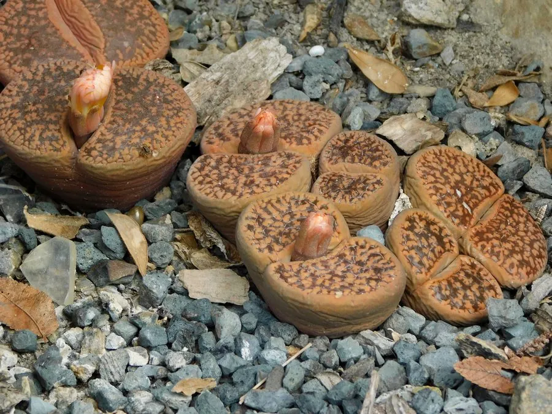

多肉植物 · 植物界
日轮玉 Lithops aucampiae

番杏科生石花属小型多肉，球状叶拟态石块，顶部棕褐色斑纹如日轮，秋季开黄色花，原产南非，是生石花中的经典种。
- 分类
- 门被子植物门纲木兰纲目石竹目科番杏科属生石花属
- 栖息环境
- 南非德兰士瓦的干旱砾石地，喜光、耐旱
- 地理分布
- 原产南非德兰士瓦地区，世界各地盆栽栽培
- 保护级别
- 暂无评估
物种志
日轮玉为番杏科生石花属小型多肉植物，植株由一对肥厚的肉质叶对生组成，高 2–3 厘米，直径 2–4 厘米，形似卵石。叶顶面平坦，棕褐色至红褐色，带有窗状斑纹，似日轮环绕。花自叶缝中央抽出，黄色，直径 3–4 厘米，花期 9–11 月；果实为蒴果。
日轮玉原产南非德兰士瓦的干旱砾石地，长期演化出拟态石块的形态以减少被动物发现，顶部的透明窗可让光线进入叶肉进行光合作用。它每年春季蜕去旧叶、从裂缝中长出新叶，秋季开花，冬季休眠。栽培时需严格控水，尤其蜕皮期不可浇水；盆土以颗粒为主，保持充足光照和良好通风，是生石花属中的经典种类。
形态与习性
- 株高植株高 2–3 厘米，直径 2–4 厘米
- 花期9–11 月，花黄色
- 果期花后结蒴果，遇水开裂
- 光照喜充足阳光，光照不足易徒长
- 水分严格控水，蜕皮期停水
- 土壤颗粒为主、排水良好的矿质土
- 繁殖以播种为主，也可分株
- 主要用途小型盆栽、多肉收藏
趣味知识
- 日轮玉顶面的斑纹呈窗状环绕，形似日轮，因此得名。
- 它每年春季蜕去旧叶、长出新叶，蜕皮期需要完全断水。
- 日轮玉拟态石块，可减少被食草动物发现的概率。
- 秋季从叶缝中央抽出黄色花朵，花期约一周。